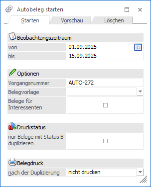
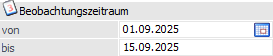
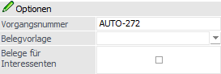
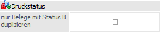
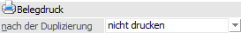

In dem Register "Starten" können die Grundeinstellungen für das Durchführen einer Autobeleg-Duplizierung hinterlegt werden.

Folgende Einstellungen stehen zur Verfügung:
Beobachtungszeitraum

Ø Beobachtungszeitraum von / bis
Hier erfolgt die Eingabe des Zeitraumes, in welchem die Termine / Aktionen zu Belegen umgewandelt werden sollen.
Optionen

Ø Vorgangsnummer
An dieser Stelle erfolgt die Eingabe einer Nummer (10-stellig, alphanumerisch) um die "autonomen" Belege nach ihrer Erzeugung noch geschlossen ansprechen zu können. Dieses geschlossene Ansprechen ist z.B. dann notwendig, wenn die duplizierten Belege wieder gelöscht werden sollen. In diesem Fall müssen die einzelnen Belege nicht gesucht und einzeln gelöscht werden, sondern können über die Vorgangsnummer pauschal angesprochen werden.
Hinweis 1
Die Vorgangsnummer kann mit Hilfe der Einstellung "Autobeleg" (WinLine START - Parameter - Applikations-Parameter - FAKT-Parameter - Nummernkreise) vorbelegt werden.
Hinweis 2
Die Vorgangsnummer ist auch das entscheidende Selektionskriterium, aufgrund dessen in der Funktion Telefonverkauf die Vorschlagsliste für die Telefonliste aufbereitet werden.
Ø Belegvorlage
In dem Feld "Belegvorlage" kann eine angelegte Belegvorlage hinterlegt werden, welche zur Erstellung der duplizierten Belege verwendet werden soll. Durch die Vorlage ist es möglich, Werte aus dem Bereich "Bestelldatei Kopf" sowie aus "Bestelldatei Mitte" vorzudefinieren. D.h. nicht die Werte aus dem Quell- / Basisbeleg zu verwenden, sondern jene, die in der Vorlage angegeben werden.
Beispiele
ü Im Bereich "Bestelldatei Kopf" Änderung der Belegart, des Listbilds, des OP-Kennzeichens, etc..
ü Im Bereich "Bestelldatei Mitte" Änderung des Kostenträger, der Kostenstelle, des Erlöskontos, etc..
Hinweis
Die Belegvorlage des Termins hat immer Vorrang vor der hier hinterlegten Vorlage!
Ø Belege für Interessenten
An dieser Stelle kann definiert werden, ob Belege für Interessenten erstellt / dupliziert werden sollen.
Hinweis
Diese Einstellung wird benutzerspezifisch gespeichert und wirkt sich auch auf den Programmbereich "Telefonliste starten" aus.
Druckstatus

Ø nur Belege mit Druckstatus B duplizieren
Ist die Checkbox aktiviert, werden nur jene Belege als Ausgangsbelege für den Duplikationslauf herangezogen, welche den Abarbeitungscode "B" aufweisen. D.h. auch wenn ein Beleg aufgrund seiner Eigenschaften (Laufnummer stimmt zufällig mit der in einer Aktionsplanzeile überein) angesprochen werden müsste, findet die Duplizierung aufgrund des Belegstatus (kein "B" enthalten) nicht statt.
Hinweis
Diese Einstellung wird benutzerspezifisch.
Belegdruck

Ø nach der Duplizierung
Aus der Auswahlliste kann jene Stufe gewählt werden, in der die erzeugten Belege gedruckt werden sollen. Dazu wird nach der Duplizierung das Fenster Belegdruck geöffnet und die erstellten Belege, sofern die Kriterien für den Stapeldruck erfüllt sind (Beleg ist in der ausgewählten Stufe freigegeben, Beleg hat als Druckstatus "A" oder "D" in der ausgewählten Belegstufe) zum Druck vorgeschlagen. Ebenso steht die Auswahl "nicht drucken" zur Verfügung.